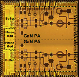
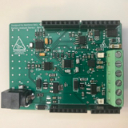
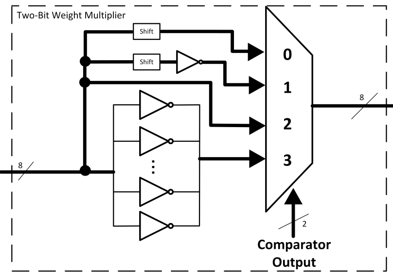

|
News
|
|
Research
My research interests incude analog/RF circuit design, device physics and machine learning. My main focus is on circuit and system design for high-speed and RF applications used in wireless transmission and sensing. Currently, I am working on my honors research thesis that combines RF circuit design with aspects of machine learning and optimization. The goal is to leverage machine learning to assist with the VCO design flow.
|
|  |
A Multifunction Transmitter based on a Fully-Digital CMOS/GaN Architecture in DAHI Technology
Matthew LaRue,
Taylor Barton,
Matthew Belz,
Shahriar Rashid,
Brian Dupaix,
Todd James,
William Gouty,
Paul Watson,
Tony Quatch,
Waleed Khalil
GOMAC Tech, 2018
This paper presents an integrated outphasing transmitter based on a fully-digital architecture and implemented in a heterogeneous process technology. The transmitter consists of four independent channels having CMOS phase modulators driving digital GaN PAs. For multifunction operation, multiple channels are combined off-chip, with in-phase combining for high-power telemetry signals and outphasing used for amplitude-modulated communications signals. The full paper is not public release (US Persons only), only this abstract was cleared for release.
|
|  |
Battery Analysis Device
Matthew Belz, 2016
Designed a precision data aquistion system with programmable load and charging to determine the health of LiFePO4 battery cells. Started as a hobby project and then was funded by Ohio State through the STEP program, which graciously provided funding for necessary test equipment and manufacturing.
|
|  |
Efficient Multi-Bit Neural Networks
Matthew Belz, 2018
Final project for ECE 5194.08--VLSI Digital Signal Processing Systems. I reviewed the current techniques used for neural net hardware acceleration and a proposed an extenstion of a hardware accelerator used for binary neural networks for ternary and two-bit networks.
|
|